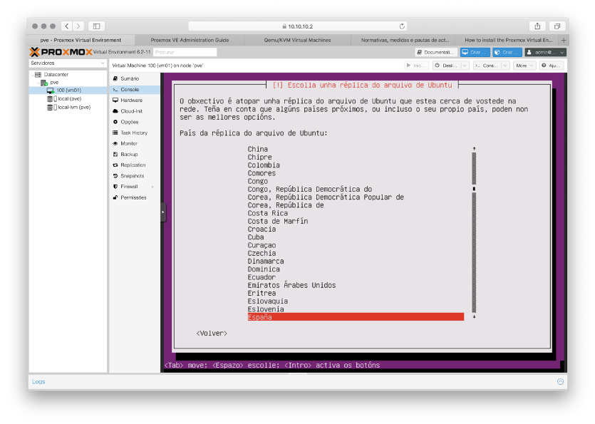

Instalación de Ubuntu 18.04 Server minimal nunha VM de Proxmox
A seguinte secuencia de capturas mostra a instalación de Ubuntu 18.04 Server minimal coas opcións que hai que seleccionar en cada paso.
A maioría dos pasos son semellantes ao que xa se fixo na práctica 0, pero OLLO que hai algunha pequena diferenza.
- Inicia a VM que creaches no Proxmox e que ten montada no CD virtual a imaxe ISO da versión MinimalCD do Ubuntu Server 18.04.
- Se a VM se iniciou correctamente, accedendo á súa consola poderás ver o menú inicial do instalador de Ubuntu. Escolle a opción Install.
- Escolle o idioma.
- Escolle a localización.
- Configura o teclado. Podes aceptar que se detecte automaticamente ou non aceptar e configuralo manualmente. Se o configuras manualmente, podes deixar a disposición por defecto ou escoller a que máis se asemelle ao teclado que teñas.
- A configuración automática da rede faia na VM Proxmox xa que non temos configurado o protocolo necesario para que funcione. Acepta e escolle a opción de configuración manual da rede.
- Cubre os seguintes datos de configuración da rede a medida que se che vaian pedindo:
- Enderezo IP: 10.10.10.100/24
- Enderezo da pasarela: 10.10.10.2
- Enderezo do servidor de nomes: 10.0.2.3
- Nome da máquina: vm100
- Nome do dominio: icap
- Escolle a réplica que se usará para descargar Ubuntu.

- Continua deixando a información do proxy en branco.
- Realízase a carga das compoñentes adicionais. Paciencia. Isto pode levar un rato.
- Configura a conta de usuario que usarás para iniciar sesión na VM. Podes por os datos que queiras pero lémbrate deles porque vamos necesitalos despois.

- Se é doado adiviñar o contrasinal, o instalador faracho saber. Como é unha conta que usaremos só para probas podes deixalo así.
- Realízase a configuración do reloxo.
- Escolle o fuso horario de Madrid.
- Seguen a cargarse máis compoñentes adicionais. Paciencia.
- Configuración do disco. Vamos escoller a opción máis simple que consiste nun modo guiado que usa o disco completo. O instalador encargarase de todo automaticamente.
- Acepta particionar o disco e formatar a partición. Unha vez remate escolle Si para aceptar gravar as modificacións no disco.
- Comeza a instalación do sistema. Paciencia. Este é o paso da instalación que require de máis tempo.
- Escolle a opción sen actualizacións automáticas. Como a VM vamos usala só para probas, así evitamos que as actualizacións interfiran e consuman recursos que poden facer que a VM vaia moi lenta.
- A instalación continúa. Paciencia.
- Escolle instalar só a colección de software Basic Ubuntu server que se indica na captura.
OLLO que para escoller opcións hai que usar a BARRA ESPACIADORA e non a tecla RETURN
- Realízase a instalación do software escollido. Paciencia. Isto tamén vai levar un cacho.
- Acepta instalar GRUB, o cargador que xestiona o arranque do SO desde o disco ríxido.
- Escolle Si para indicar que o reloxo do sistema utiliza a hora UTC.
- Instálase o que falta. Xa estamos rematando.
- Rematou a instalación. Acepta para que se reinicie a VM.